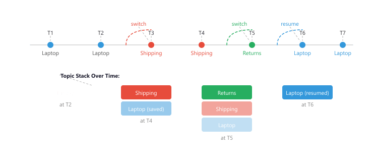

The happy path is six turns long. Real users take forty, change their mind twice, ask the same question in three different ways, and then complain that I forgot. Multi-turn dialogue is the chapter where the demo dies and the product is born.
Echo, Unhappy-Path AI Agent
Real conversations are messy. Users change their minds, ask for clarification, jump between topics, give ambiguous instructions, and sometimes say things the system cannot handle. A conversational AI system that only works for the "happy path" will fail in practice. Building on the memory systems from Section 37.3, this section covers the patterns and strategies for handling the full complexity of multi-turn dialogue, including clarification and correction flows, topic management, fallback hierarchies, human handoff, and the critical engineering challenge of managing context window overflow in long conversations.
Prerequisites
Multi-turn conversation evaluation builds on the dialogue architecture from Section 37.1 and the memory management strategies in Section 37.3. General LLM evaluation concepts are covered in detail later in the book; this section focuses specifically on conversation-level metrics and testing patterns.
37.4.1 Conversation Repair Patterns
Conversation repair refers to the mechanisms a dialogue system uses to recover from misunderstandings, ambiguity, and errors. In human conversation, repair happens naturally through clarification questions, corrections, and confirmations. Production systems can pair these patterns with observability tooling to track which repair patterns fire most often. Building these patterns into a conversational AI system is essential for robust performance.
Researchers at Stanford found that users correct chatbot misunderstandings an average of 3.2 times before giving up and rephrasing their entire request from scratch. The lesson: a good clarification prompt after the first confusion saves two rounds of user frustration.
Clarification Strategies
The optimal clarification threshold is not fixed; it depends on the cost of getting it wrong. A banking bot that might transfer money to the wrong account should clarify aggressively (low confidence threshold). A casual FAQ bot that might give a slightly imprecise answer can proceed more boldly (high confidence threshold). Calibrate your clarification trigger to the stakes of the action, not to a universal accuracy target.
When a user's message is ambiguous or incomplete, the system needs to ask for clarification rather than guess. The key design challenge is detecting when clarification is needed versus when the system should proceed with its best interpretation. Over-clarifying is annoying; under-clarifying leads to errors.
from openai import OpenAI
from enum import Enum
import json
client = OpenAI()
class ClarificationType(Enum):
NONE_NEEDED = "none_needed"
AMBIGUOUS_REFERENCE = "ambiguous_reference"
MISSING_INFORMATION = "missing_information"
CONFLICTING_REQUEST = "conflicting_request"
OUT_OF_SCOPE = "out_of_scope"
UNCLEAR_INTENT = "unclear_intent"
def detect_clarification_need(
user_message: str,
conversation_history: list[dict],
available_actions: list[str]
) -> dict:
"""Determine if clarification is needed before proceeding."""
prompt = f"""Analyze whether this user message needs clarification
before the system can act. Consider the conversation history.
Available system actions: {', '.join(available_actions)}
Conversation history (last 3 turns):
{json.dumps(conversation_history[-6:], indent=2)}
Current user message: "{user_message}"
Return JSON with:
- needs_clarification: true/false
- type: one of [none_needed, ambiguous_reference, missing_information,
conflicting_request, out_of_scope, unclear_intent]
- confidence: 0.0 to 1.0 (how confident the system is in its interpretation)
- best_interpretation: what the system thinks the user means
- clarification_question: question to ask if clarification needed
- alternatives: list of possible interpretations (if ambiguous)"""
response = client.chat.completions.create(
model="gpt-4o",
messages=[{"role": "user", "content": prompt}],
response_format={"type": "json_object"},
temperature=0
)
return json.loads(response.choices[0].message.content)
class ConversationRepairManager:
"""Handles clarification, correction, and repair in dialogue."""
def __init__(self, confidence_threshold: float = 0.75):
self.confidence_threshold = confidence_threshold
self.pending_clarification: dict = None
self.correction_history: list[dict] = []
def process_message(self, user_message: str, history: list,
actions: list[str]) -> dict:
"""Decide whether to act, clarify, or handle a correction."""
# Check if this is a correction of something previous
if self._is_correction(user_message, history):
return self._handle_correction(user_message, history)
# Check if this answers a pending clarification
if self.pending_clarification:
return self._resolve_clarification(user_message)
# Analyze the new message
analysis = detect_clarification_need(
user_message, history, actions
)
if (analysis["needs_clarification"]
and analysis["confidence"] < self.confidence_threshold):
self.pending_clarification = analysis
return {
"action": "clarify",
"question": analysis["clarification_question"],
"alternatives": analysis.get("alternatives", [])
}
return {
"action": "proceed",
"interpretation": analysis["best_interpretation"],
"confidence": analysis["confidence"]
}
def _is_correction(self, message: str, history: list) -> bool:
"""Detect if the user is correcting a previous statement."""
correction_markers = [
"no, i meant", "actually,", "sorry, i meant",
"not that", "i said", "no no", "correction:",
"let me rephrase", "what i meant was",
"change that to", "instead of"
]
lower = message.lower().strip()
return any(lower.startswith(m) for m in correction_markers)
def _handle_correction(self, message: str, history: list) -> dict:
"""Process a user correction and update state."""
self.correction_history.append({
"original_context": history[-2:] if len(history) >= 2 else [],
"correction": message
})
return {
"action": "correct",
"message": message,
"instruction": (
"The user is correcting their previous statement. "
"Update your understanding accordingly."
)
}
def _resolve_clarification(self, answer: str) -> dict:
"""Resolve a pending clarification with the user's answer."""
resolved = {
"action": "proceed",
"original_question": self.pending_clarification,
"clarification_answer": answer,
"interpretation": (
f"Original: {self.pending_clarification['best_interpretation']}. "
f"Clarified with: {answer}"
)
}
self.pending_clarification = None
return resolvedThe confidence threshold for triggering clarification is one of the most important tuning parameters in a conversational system. Set it too low (e.g., 0.5) and the system asks too many questions, frustrating users who gave clear instructions. Set it too high (e.g., 0.95) and the system proceeds with wrong interpretations. Start with 0.75, then adjust based on user feedback. Task-critical applications (medical, financial) should use a lower threshold; casual chatbots should use a higher one.
The Clarification-Confidence Rule
The process_message method in Code Fragment 37.4.1 fires a clarifying question when a single confidence score drops below self.confidence_threshold. That single-number test is a useful start, but it misses a second failure mode: the system can be confident that some interpretation is right while two interpretations are nearly tied. A robust rule therefore reads the full distribution over candidate intents, not just the top score. Let the intent classifier produce probabilities $p_1 \ge p_2 \ge \ldots$ over the candidate interpretations, and write $p_{\text{top}} = p_1$ for the most likely intent and $p_{\text{second}} = p_2$ for the runner-up. The system asks a clarifying question when either condition holds:
The first clause, $p_{\text{top}} < \tau$, is the absolute-confidence test: even the best guess is too weak to act on. The second clause, the margin test $p_{\text{top}} - p_{\text{second}} < \delta$, is the tie-breaker test: the top guess is strong in absolute terms but a close rival makes acting on it risky. The threshold $\tau$ encodes how confident "confident enough" must be, and the margin $\delta$ encodes how much daylight a winner needs over the runner-up before the system commits.
Work a number. Suppose a banking bot, where acting wrongly is expensive, is tuned to $\tau = 0.75$ and $\delta = 0.20$. Consider three utterances and their classifier distributions:
- Clear: "transfer 500 dollars to savings" gives $p_{\text{top}} = 0.94$ (transfer), $p_{\text{second}} = 0.03$. Here $0.94 \ge \tau$ and the margin $0.94 - 0.03 = 0.91 \ge \delta$, so both clauses pass and the system proceeds without asking.
- Weak top: "do the usual" gives $p_{\text{top}} = 0.55$ (pay rent). Since $0.55 < \tau$, the first clause triggers and the bot asks "Did you mean pay your rent of 1,200 dollars?" regardless of the margin.
- Close rivals: "send it to my account" gives $p_{\text{top}} = 0.82$ (checking), $p_{\text{second}} = 0.70$ (savings). The top clears $\tau$, but the margin $0.82 - 0.70 = 0.12 < \delta$, so the second clause triggers: "Checking or savings?" This is the case the single-threshold code would have missed, since $0.82$ alone looks confident.
The two failure modes are mirror images. Set $\tau$ (or $\delta$) too high and the system over-asks: it interrogates users who gave perfectly clear instructions, and as the Stanford finding above shows, repeated avoidable questions push users to abandon the conversation. Set them too low and the system commits to a wrong assumption: it confidently transfers money to the wrong account because a $0.12$ margin was treated as decisive. The right operating point depends on the cost of acting wrongly, exactly the stakes-calibration argument made in the Key Insight above: a banking bot wants high $\tau$ and high $\delta$; a casual FAQ bot can relax both to avoid nagging.
37.4.2 Topic Management
In multi-turn conversations, users frequently switch between topics. They might start asking about one product, pivot to ask about shipping policies, and then return to the original product question. A robust system needs to detect topic switches, maintain context for each topic, and resume prior topics gracefully when the user returns to them. Figure 37.4.1a shows how the topic stack tracks context switches.

import json
from dataclasses import dataclass, field
from typing import Optional
@dataclass
class TopicContext:
"""Context for a single conversation topic."""
topic_name: str
summary: str = ""
turns: list[dict] = field(default_factory=list)
state: dict = field(default_factory=dict)
is_resolved: bool = False
class TopicManager:
"""Manages topic tracking and switching in conversations."""
def __init__(self):
self.topic_stack: list[TopicContext] = []
self.resolved_topics: list[TopicContext] = []
def detect_topic_change(self, user_message: str,
current_topic: Optional[TopicContext]) -> dict:
"""Detect if the user is switching, resuming, or staying on topic."""
current_name = current_topic.topic_name if current_topic else "None"
saved_topics = (
[t.topic_name for t in self.topic_stack[:-1]]
if len(self.topic_stack) > 1
else []
)
prompt = f"""Given the current conversation topic and the user's new message,
determine the topic action.
Current topic: {current_name}
Saved (paused) topics: {saved_topics}
User message: "{user_message}"
Return JSON with:
- action: "continue" (same topic), "switch" (new topic), "resume" (back to saved topic)
- topic_name: name of the topic (new name if switch, existing if resume)
- reason: brief explanation"""
response = client.chat.completions.create(
model="gpt-4o-mini",
messages=[{"role": "user", "content": prompt}],
response_format={"type": "json_object"},
temperature=0
)
return json.loads(response.choices[0].message.content)
def switch_topic(self, new_topic_name: str) -> TopicContext:
"""Switch to a new topic, preserving the current one."""
new_topic = TopicContext(topic_name=new_topic_name)
self.topic_stack.append(new_topic)
return new_topic
def resume_topic(self, topic_name: str) -> Optional[TopicContext]:
"""Resume a previously paused topic."""
for i, topic in enumerate(self.topic_stack):
if topic.topic_name == topic_name:
# Move to top of stack
resumed = self.topic_stack.pop(i)
self.topic_stack.append(resumed)
return resumed
return None
def get_current_topic(self) -> Optional[TopicContext]:
"""Return the currently active topic."""
return self.topic_stack[-1] if self.topic_stack else None
def get_topic_context_string(self) -> str:
"""Generate context about active and paused topics."""
if not self.topic_stack:
return "No active topics."
current = self.topic_stack[-1]
parts = [f"Current topic: {current.topic_name}"]
if current.summary:
parts.append(f"Topic context: {current.summary}")
paused = self.topic_stack[:-1]
if paused:
paused_names = [t.topic_name for t in paused]
parts.append(f"Paused topics: {', '.join(paused_names)}")
return " | ".join(parts)The Topic-Stack Push/Pop Algorithm
The code above shows the data structure, but the load-bearing idea is the discipline of push and pop. Treat the conversation like a call stack in a programming language: the top of the stack is the topic the system is actively serving, and everything below it is suspended, waiting to be resumed in last-in-first-out order. This mirrors how people actually digress and return. When you interrupt a friend mid-story to answer a phone call, you both implicitly expect to return to exactly where the story paused, not to start over. The algorithm box below states the three operations precisely.
Let the stack be $S = [f_1, f_2, \ldots, f_k]$, where each frame $f_i$ holds a topic name, its accumulated turns, and its slot state. The active frame is $f_k$ (the top). On each user turn, the classifier returns one of three actions, and the stack is updated as follows.
- continue: the utterance stays on the active topic. Append the turn to $f_k$. The stack depth is unchanged: $S \rightarrow [f_1, \ldots, f_k]$.
- push (switch): the utterance opens a new sub-intent. Build a fresh frame $f_{k+1}$ and push it, suspending $f_k$ with its state intact: $S \rightarrow [f_1, \ldots, f_k, f_{k+1}]$. The new topic is now active.
- pop (complete or resume): the active topic resolves (its required slots are filled) or the user explicitly returns to an earlier thread. Remove $f_k$ (archive it if resolved) and expose the frame beneath, so the suspended topic becomes active again: $S \rightarrow [f_1, \ldots, f_{k-1}]$. A targeted resume pulls a named frame from deeper in the stack to the top rather than popping strictly from the end.
The invariant: a topic is never lost while unresolved. It is either active (on top) or suspended (below the top) with its slot state preserved, so the system can always rebuild full context by reading from $f_k$ downward.
To see the mechanics concretely, trace a support dialogue where the user opens topic A (a refund), digresses to topic B (shipping), resolves B, and returns to A. Table 37.4.1 shows the stack state after each turn, with the active (top) frame in bold.
| Turn | User utterance | Action | Stack after turn (bottom → top) |
|---|---|---|---|
| 1 | "I want a refund on order 4471." | push A | [A: refund] |
| 2 | "What is its status?" (still about the order) | continue | [A: refund] |
| 3 | "Wait, how much is express shipping?" | push B | [A: refund, B: shipping] |
| 4 | "Got it, thanks." (shipping answered) | pop B | [A: refund] |
| 5 | "So can you process that refund now?" | continue (A resumed) | [A: refund] |
Notice the payoff at turn 5. Because frame A carried its slot state (order 4471, refund intent) through the entire digression, the system answers "that refund" without re-asking for the order number. A stateless system that simply concatenated raw history would have to re-extract the order ID, and a system that overwrote context on the topic switch would have lost it entirely. The stack is what lets the agent treat "that refund" as an unambiguous reference three turns after the topic was last touched. The resume_topic() method in Code Fragment 37.4.2 implements the deeper-frame pull for the case where the user names an older topic directly, for example "anyway, back to my refund" after several intervening digressions.
37.4.3 Guided Conversation Flows
Some conversations need to follow a structured sequence of steps while still feeling natural. Onboarding flows, troubleshooting wizards, and intake forms all benefit from a guided approach where the system steers the conversation through required stages while allowing the user to ask questions or deviate temporarily.
from dataclasses import dataclass, field
from typing import Callable, Optional
@dataclass
class FlowStep:
"""A single step in a guided conversation flow."""
id: str
prompt: str
validation: Optional[Callable] = None
next_step: Optional[str] = None
branches: dict = field(default_factory=dict) # condition -> step_id
required: bool = True
collected_value: Optional[str] = None
class GuidedFlowEngine:
"""Manages structured conversation flows with branching."""
def __init__(self, steps: list[FlowStep]):
self.steps = {s.id: s for s in steps}
self.current_step_id: str = steps[0].id
self.completed_steps: list[str] = []
self.flow_data: dict = {}
self.is_complete = False
self.deviation_stack: list[str] = []
def get_current_prompt(self) -> str:
"""Get the prompt for the current step."""
step = self.steps[self.current_step_id]
return step.prompt
def process_response(self, user_response: str) -> dict:
"""Process user response for the current step."""
step = self.steps[self.current_step_id]
# Validate if validator exists
if step.validation:
is_valid, error_msg = step.validation(user_response)
if not is_valid:
return {
"action": "retry",
"message": error_msg,
"step": step.id
}
# Store the response
step.collected_value = user_response
self.flow_data[step.id] = user_response
self.completed_steps.append(step.id)
# Determine next step (branching logic)
next_id = self._get_next_step(step, user_response)
if next_id is None:
self.is_complete = True
return {
"action": "complete",
"data": self.flow_data,
"message": "Flow completed successfully."
}
self.current_step_id = next_id
return {
"action": "next",
"prompt": self.steps[next_id].prompt,
"step": next_id,
"progress": len(self.completed_steps) / len(self.steps)
}
def handle_deviation(self, user_message: str) -> dict:
"""Handle when the user goes off-script mid-flow."""
# Save current position
self.deviation_stack.append(self.current_step_id)
return {
"action": "deviation",
"saved_step": self.current_step_id,
"instruction": (
"The user has asked something outside the current flow. "
"Answer their question, then guide them back to the flow. "
f"Current step was: {self.steps[self.current_step_id].prompt}"
)
}
def resume_flow(self) -> dict:
"""Resume the flow after a deviation."""
if self.deviation_stack:
self.current_step_id = self.deviation_stack.pop()
step = self.steps[self.current_step_id]
return {
"action": "resume",
"prompt": (
f"Now, back to where we were. {step.prompt}"
),
"step": step.id
}
def _get_next_step(self, step: FlowStep,
response: str) -> Optional[str]:
"""Determine the next step based on response and branches."""
# Check branches first
for condition, target_id in step.branches.items():
if condition.lower() in response.lower():
return target_id
# Fall back to default next
return step.next_step
# Example: Troubleshooting flow
def validate_yes_no(response: str) -> tuple[bool, str]:
if response.lower().strip() in ["yes", "no", "y", "n"]:
return True, ""
return False, "Please answer yes or no."
troubleshooting_flow = GuidedFlowEngine([
FlowStep(
id="start",
prompt="Is your device currently powered on?",
validation=validate_yes_no,
branches={"no": "power_check", "yes": "connectivity"}
),
FlowStep(
id="power_check",
prompt="Please try holding the power button for 10 seconds. Did it turn on?",
validation=validate_yes_no,
branches={"no": "hardware_issue", "yes": "connectivity"}
),
FlowStep(
id="connectivity",
prompt="Can you see the Wi-Fi icon in the status bar?",
validation=validate_yes_no,
branches={"no": "wifi_fix", "yes": "app_check"}
),
FlowStep(
id="wifi_fix",
prompt="Please go to Settings > Wi-Fi and toggle it off and on. Did that help?",
validation=validate_yes_no,
next_step="app_check"
),
FlowStep(
id="app_check",
prompt="Which app is experiencing the issue?",
next_step=None # End of flow
),
FlowStep(
id="hardware_issue",
prompt="It sounds like there may be a hardware issue. I will connect you with our repair team.",
next_step=None
),
])- Conversation repair makes dialogue robust: Clarification prompts, confirmation patterns, and graceful recovery from misunderstandings let a system survive ambiguous user input instead of failing silently.
- Topic management requires explicit state: Detect topic shifts, stack pending topics, and resume gracefully when the user returns to an earlier thread.
- Guided flows beat free-form chat for transactional tasks: When the user needs to complete a structured workflow (booking, onboarding, troubleshooting), an explicit flow with slot-filling and validation outperforms open-ended generation.
What Comes Next
The remaining flow-level techniques (fallback strategies, human handoff, context window overflow, and a strategy-comparison table) continue in Section 37.4a: Fallback, Handoff, Overflow & Flow Strategies.